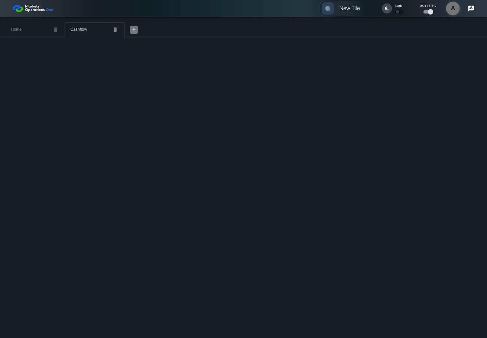

UX-006 keyboard and accessibility probe
PASS · application/run-050/ux-006-keyboard-and-accessibility-probe-fabc645b4121-attempt-1 · ACTUAL_APPLICATION_LOCAL_SERVICES
Actual React shell. Controlled catalog, user identity, photo failures, and SystemJS tenant. Chromium only. Accessibility and layout outcomes are proposed probes; no approved conformance standard is inferred.
2026-10-22T06:11:28.398Z to 2026-10-22T06:11:29.716Z
Assertions and result · Artifact manifest · Exact run inputs and source hashes
Result SHA-256:7014319d24a9bf93aa1c024b8f29a421d904ac94a14131ddac792e34e19d8517Screenshot capture: CAPTURED. Named frames: 4.
Step screenshot evidence: COMPLETE. 3/3 canonical steps have execution screenshots.
Canonical step timeline
Given USER-A has Home and Cashflow workspaces loaded
Execution: PASSED.1. step-01 Visible state after step 1: Given USER-A has Home and Cashflow workspaces loaded
2026-10-22T06:11:29.315Z · 1440×1000
Step: /Users/lushevol/code/github/ratan-release-impact/workbench/tasks/ui-test-coverage-20261022/test-cases.md:12477
SHA-256:26ea6993418392c4baa3bb1a617c644cb396fc9d88208142ef81e6939d12952cWhen USER-A clicks the tab labelled "Cashflow" in the tablist named "workspaces" on the Home page
Execution: PASSED.
2. step-02 Visible state after step 2: When USER-A clicks the tab labelled "Cashflow" in the tablist named "workspaces" on the Home page
2026-10-22T06:11:29.429Z · 1440×1000
Step: /Users/lushevol/code/github/ratan-release-impact/workbench/tasks/ui-test-coverage-20261022/test-cases.md:12478
SHA-256:9892b728e3214d2eaae7011c9a20a37d23ae0636caff8c843fb493ea9d1ec65cThen The tab labelled "Cashflow" in the tablist named "workspaces" on the Home page has accessibility selected state equal to true
Execution: PASSED.
3. step-03 Visible state after step 3: Then The tab labelled "Cashflow" in the tablist named "workspaces" on the Home page has accessibility selected state equal to true
2026-10-22T06:11:29.464Z · 1440×1000
Step: /Users/lushevol/code/github/ratan-release-impact/workbench/tasks/ui-test-coverage-20261022/test-cases.md:12479
SHA-256:9892b728e3214d2eaae7011c9a20a37d23ae0636caff8c843fb493ea9d1ec65c
Additional named frames

The final visible state after the named test assertions.
2026-10-22T06:11:29.529Z · 1440×1000Step: Test source: /Users/lushevol/code/github/ratan-release-impact/workbench/e2e/audit-specs/ux-shell.spec.ts:39
SHA-256:
9892b728e3214d2eaae7011c9a20a37d23ae0636caff8c843fb493ea9d1ec65cScreenshots establish visible state only. Assertions and traces support functional claims.